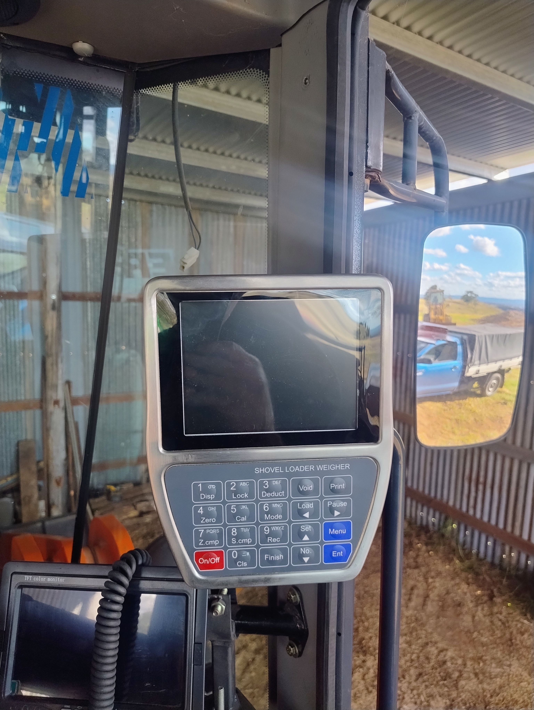

Loader Scales Mounted in Cab
Easy to see in direct sunlight or at night, harsh enviroment for out side or cabless systems
We deliver to site and our team member assists you or your maintence team with the installation and setup of the loader scale system.
We use a local hydraulics specialist to assist with specific loader connections and ensure proper installation of the transducers for accurate weighing. This part of the operation ensures your hydraulic system is coverd locally.
